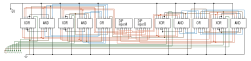

8-Bit Ripple Carry Adder
After learning about Full Adders and Ripple Carry Adders in ENGG*2410 — Digital Systems Design in the Fall semester of 2023, I wanted to
build an 8-Bit ripple carry adder at home. The issue being that I do not own a Xilinx FPGA and therefore would need a different strategy
than the one used in ENGG*2410. Luckily though I had a few breadboards and Quad 2-input Logic ICs. Specifically, XOR, AND, and OR logic
chips. Each 14 pin DIP logic chip had 4 logic gates on it. Each gate has two input pins and an output pin. This leaves one more pin of the
DIP package for a VCC connection and then one more for ground. The first step in the process was to plan out the 8-Bit ripple carry adder. A
plan of the logic was made using AutoCAD.
Note: This logic diagram scrolls horizontally.
Each full adder passes its carry out bit into the carry in bit of the following adder.
Then a new block diagram was made that incorporated the pinout of the DIP ICs. This was again made using AutoCAD and like the above image it
was exported as an SVG so that all the details can be zoomed in on. This new block diagram was made to get a better understanding for how to
plan out the wires and connections that would be needed for the physical assembly of the 8-Bit adder.

Once this was done I began assembling the breadboards. I began by layout all the ICs I would need. In this project I made use of:
- 4 x 74x86 Quad 2-input XOR ICs
- 4 x 74x08 Quad 2-input AND ICs
- 2 x 74x32 Quad 2-input OR ICs
- 2 x DIP 8 Switches Board
- 2 x Full sized Breadboards
- 1 x Mini Breadboard
- 5 x 200Ω Resistors
- 8 x 10KΩ small Resistors
- 8 x 10KΩ larger Resistors
- 8 x Green LEDs
- 1 x Red LED
- Many many wires
At this point all the ICs and DIP switches had been placed and a single full adder had been completed.

As more and more full adders were wired up and completed the connections started to get more out of hand an increasingly unmanageable. This
project really makes me appreciate FPGAs design where the connection logistics are not important for the designer, and PCBs with elegant
routing. Doing all the wire routing by hand is by far the hardest and most time-consuming part of this entire project. Near the final two
full adders I also ran out of the stiffer flat laying wires and instead had to finish the project with jumper cables.
On the left DIP switch an input of 10001010binary is given which is added to the input of the right DIP switch with input 00100010binary. This yields an output of 010101100binary on the LEDs. If the two inputs are converted to base ten then one gets an expression of 138decimal + 34decimal which equals 172decimal and this is the result we expect!

Overall, I am quite pleased with the 8-Bit Ripple Carry Adder. It took much longer than I anticipated and is a little more messy than I had
hoped for. But in order to finish it within a reasonable amount of time and using the wire and tools I had on hand this was the most
reasonable result. Given more time and some more wire and proper wire strippers I would probably have been abler to make a cleaner routes
for the wires perhaps I will try to rebuild it with such tools. What I find most pleasing about it is watching the carry bits roll over into
the output, this can be seen below.

An input of all 1s is given on the left DIP switches.

Then when a value of 1 is added this causes the entire number to roll over and the output only has the carry out light on and the
rest of the sum bits are off.